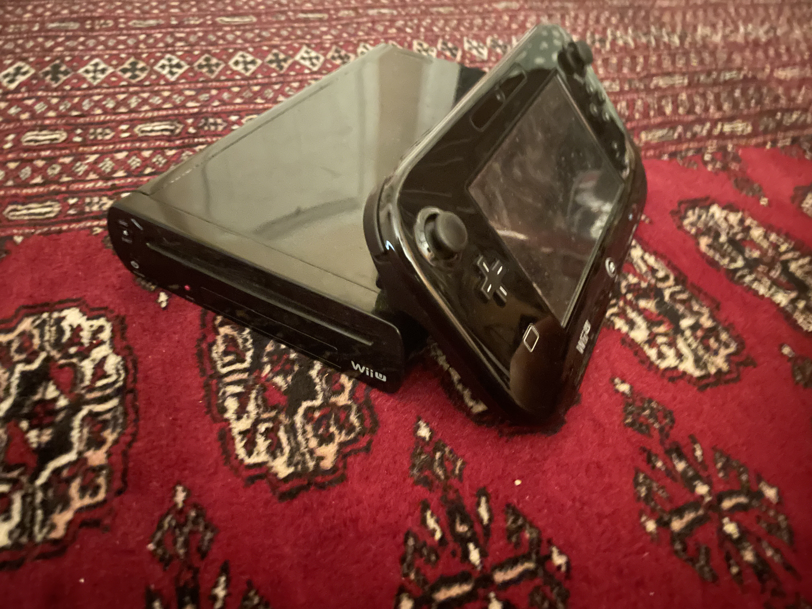
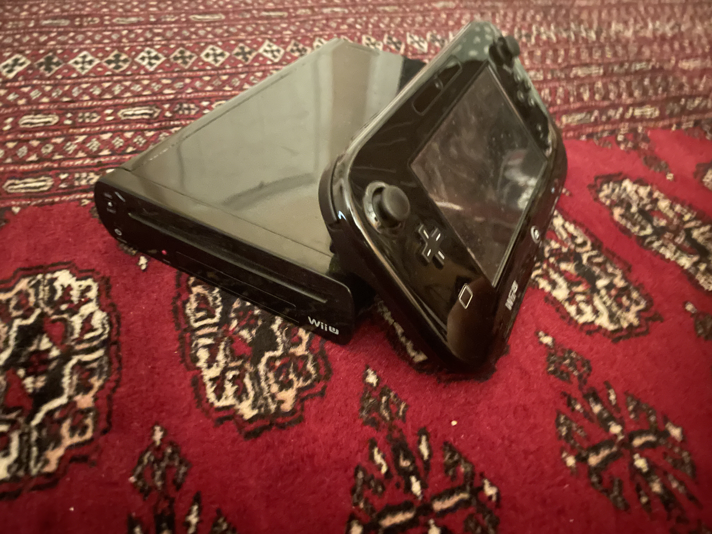

All about Nintendo Consoles!
There are many Nintendo consoles released from 1980 to the present day. You may click any one of these images to learn more about these Nintendo consoles.


 

Credits
- Gameboy by Csaliva86, found on flickr, CC-BY-NC
- Nintendo-DS-Lite-Black-Open by Evan Amos, found on Wikimedia Commons, CC-BY-SA
- Nintendo-Switch-Console-Docked-wJoyConRB by Evan-Amos, found on Wikimedia Commons, public domain.
- Nintendo-Switch-wJoyCons-BlRd-Standing-FL by Evan-Amos, found on Wikimedia Commons, public domain.
- ニンテンドーDSiとDSiLLの比較 (cropped).jpg by Ryūkotsusei, found on Wikimedia Commons, CC0.
- All uncredited photos were taken by me, all rights reserved.